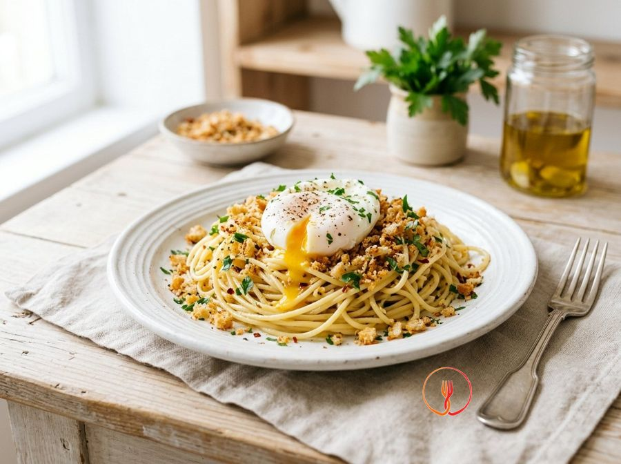

Spaghetti with Quick Poached Egg and Toasted Breadcrumbs
A budget-friendly twist on carbonara that uses stale bread for crunch and the egg to create an enveloping sauce. The contrast between the soft egg and the savoury bread makes the dish gourmet with very little spend.
A classic of simple cuisine reimagined with a poached egg that creates a natural, velvety sauce. Toasted breadcrumbs with garlic and chili provide the essential crunchy contrast for a perfect balance.
Ingredients
- Spaghetti320 g
- Medium eggs4 pcs
- Coarsely grated stale bread80 g
- Garlic1 clove
- Fresh parsley1 mazzetto
- Dried chilli flakes1 pizzico
Allergens
Gluten, Eggs
Method
- Begin by washing and thoroughly drying the bunch of fresh parsley, then finely chop it on a cutting board with a sharp knife to release its essential oils. Pour a generous drizzle of extra virgin olive oil into a large non-stick frying pan, adding the whole lightly crushed garlic clove and a pinch of dried chili. Heat over medium heat for about a minute until the garlic starts to sizzle and intensely perfumes the oil. My professional advice is to leave the garlic 'in its skin' (unpeeled) if you prefer a more delicate, less overpowering aroma in your breadcrumbs.
- Pour the 80g of coarsely grated stale breadcrumbs into the pan with the flavored oil and garlic, keeping the heat at medium. Toast the breadcrumbs for about 4-5 minutes, stirring continuously with a wooden spoon to ensure a perfectly even golden-brown finish on every single crumb. You are looking for a very crunchy texture and a deep amber colour, typical of well-toasted bread that gives off an irresistible nutty aroma. Once ready, immediately transfer the crumbs to a cold bowl and remove the garlic; this prevents the residual heat of the pan from burning the bread.
- Fill a tall pot with about 4 litres of water, bring it to a rolling boil, and add coarse salt sparingly, as the saltiness will be enhanced by the toasted breadcrumbs. Submerge the 320g of spaghetti, ensuring they are well distributed, and stir them immediately to prevent the starch from making them stick together. Keep the heat high so the water returns to a boil instantly, ensuring the pasta cooks until elastic and 'al dente'. Set a timer, calculating that you need to add the eggs exactly 3 minutes before the end of the cooking time indicated on the pasta packaging.
- While the pasta is cooking, crack the 4 medium eggs individually into four separate small cups or bowls, taking extreme care not to break the yolk. This professional technique allows you to slide the eggs into the boiling water with precision and gentleness, minimising egg white dispersion. Ensure the eggs are at room temperature to avoid excessive thermal shock when they contact the boiling water. A chef's secret: very fresh eggs have a denser white that coagulates better around the yolk without fraying into 'threads'.
- With 3 minutes remaining on the spaghetti timer, slightly lower the heat to prevent turbulent boiling from breaking the eggs. Gently slide the eggs into the pasta water one at a time, spacing them out so they don't stick to each other; the starch released by the pasta helps create a natural 'coat' around the egg. Let them cook for about 2-3 minutes without stirring or touching them at all during this delicate phase. The optimal result is an opaque, solidified white encasing a yolk that must remain completely liquid at its core.
- Prepare a slotted spoon and, with a slow and steady motion, lift the 4 poached eggs out of the pasta cooking water one by one. Place them with extreme care onto a previously warmed flat plate, being careful not to puncture the thin white membrane protecting the creamy yolk. At this stage, the eggs are extremely fragile, so avoid any bumps or overlapping that could compromise the presentation. Lightly cover the plate with another plate or a dome to keep the eggs warm while you finish the pasta.
- Using kitchen tongs, drain the spaghetti al dente and transfer them directly into the large pan used for toasting the bread, keeping a little cooking water at the bottom. Turn the heat to medium and add the finely chopped parsley and another drizzle of raw olive oil to create a silky emulsion. Toss the pasta vigorously for about a minute, adding a small ladle of cooking water if necessary to bind the flavours and make the spaghetti glossy and inviting. The secret is to create a natural creaminess from the pasta starch and oil without drying out the sauce too much.
- Proceed to plate by creating a compact nest of spaghetti in the centre of each bowl or plate, using a ladle and long tongs for precision. Using a small spatula or the slotted spoon, gently place a poached egg on top of each pasta nest, trying to centre it perfectly. Complete the dish by generously scattering the crunchy toasted breadcrumbs over the egg and around the pasta, adding a final pinch of chili if desired. Serve immediately: the guest should break the yolk with a fork, letting it flow over the spaghetti to create an instant, enveloping sauce.
- From a nutritional perspective, this recipe perfectly balances the complex carbohydrates of the pasta with the high-quality proteins of the egg. The toasted breadcrumbs act as a textural contrast, reducing the need for fatty cheeses to provide flavour. For an even healthier result, ensure you use high-quality cold-pressed extra virgin olive oil, which maintains its antioxidant properties even after light toasting. Remember that poaching in the pasta water is a brilliant technique that avoids the addition of saturated fats typical of fried eggs.
Tips
- Use very fresh eggs to achieve a well-shaped poached egg with a runny yolk.
- Toast the breadcrumbs over medium heat, stirring often, to get an even golden color without burning.
- Drain the pasta very al dente so it can finish absorbing the flavors in the pan.
Variations
- Add an extra dose of chili pepper if you love very spicy and intense flavors.
- Use a finer grind for the stale bread if you prefer a less grainy texture.
Nutrition facts (estimate)
| Per serving (245 g) | Per 100 g | |
|---|---|---|
| Energy | 2042 kJ / 488 kcal | 833 kJ / 199 kcal |
| Protein | 18.2 g | 7.4 g |
| Carbohydrates | 71.5 g | 29.2 g |
| of which sugars | 2.8 g | 1.1 g |
| Fat | 14.8 g | 6.0 g |
| of which saturates | 2.9 g | 1.2 g |
| Fibre | 4.2 g | 1.7 g |
| Salt | 1.1 g | 0.4 g |
AI estimates based on average CREA / USDA data: indicative only, not a substitute for medical or dietitian advice.
Open the recipe in the app for the shopping list, ingredient sheets and nearby shops.